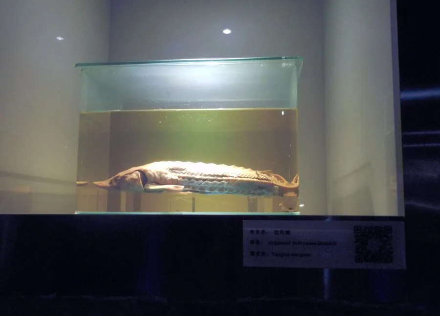

鱼类 · 动物界
达氏鲟 Acipenser dabryanus

长江上游特有的淡水鲟鱼，体型比中华鲟小，不进行江海洄游，因栖息地丧失和过度捕捞被列为极危，如今靠人工繁殖放流延续种群。
- 分类
- 门脊索动物门纲硬骨鱼纲目鲟形目科鲟科属鲟属
- 栖息环境
- 长江上游干流及支流的深水江段，底质多为砂石，水流较急
- 地理分布
- 中国长江上游，包括四川江段和金沙江下游，历史上也见于长江中游
- 保护级别
- IUCN 野外灭绝（EW，2022 年）；中国国家一级保护动物
物种志
达氏鲟体呈长纺锤形，吻部较中华鲟短而钝，口位于吻的腹面、呈横裂状，没有真正的牙齿。体表裸露无鳞，背部和体侧排列着五道骨板，背鳍位置靠后，尾鳍为歪形尾。成鱼体长一般 1–1.5 m，体重 10–30 kg，最大记录体长约 2 m、体重 50 kg 以上。体色灰褐，腹部黄白色，幼鱼体色较浅。
达氏鲟是淡水定居性鱼类，与需要江海洄游的中华鲟不同，它终生生活在长江上游干流及支流的深水江段，主食底栖小鱼、虾蟹、水生昆虫和软体动物。它性成熟较早，雄性约 4–6 龄、雌性约 6–8 龄，繁殖期在春季，产卵场位于长江上游江段。由于葛洲坝、三峡等工程阻隔洄游通道，加上航运、采砂、污染和过度捕捞，达氏鲟野生种群在 20 世纪后期急剧萎缩，2022 年IUCN 将其评定为野外灭绝。中国将其列为国家一级保护动物，目前主要依靠人工繁殖和增殖放流维持种群，科研人员也在尝试重建自然繁殖群体。
形态与习性
- 食性底栖肉食性，吃小鱼、虾蟹、水生昆虫和软体动物
- 体长一般 1–1.5 m，最大记录约 2 m
- 体重常见 10–30 kg，最大可超过 50 kg
- 寿命约 20–30 年
- 繁殖雄性 4–6 龄、雌性 6–8 龄性成熟，春季在长江上游产卵
- 习性淡水定居，不进行江海洄游，常停留在深水潭中
趣味知识
- 达氏鲟又叫长江鲟，是长江上游的标志性鱼类，与中华鲟并称长江鲟类“双雄”。
- 它不降海洄游，一生都待在长江里，这与中华鲟的江海洄游习性截然不同。
- 2022 年IUCN 宣布达氏鲟野外灭绝，如今种群主要依靠人工繁殖放流维持。